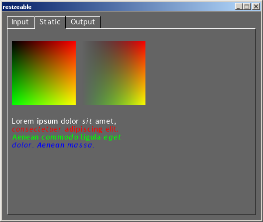
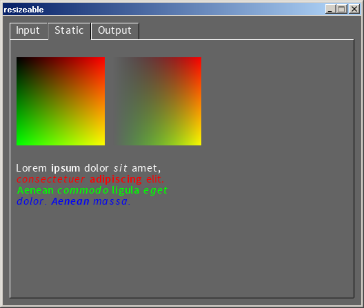

SGUI
Introduction
 

SGUI is a small, simple, cross platform GUI library, written in plain
ANSI C (C89), with the aim to create a simple, easy to use "just-works" GUI
library for small applications and test programs that just need a simple GUI.
Major design goals are simplicity, small code size and correctness (concerning
the standards involved and memory leaks).
Above you can see screenshots of the SGUI test program.
The idea of creating a small GUI library emerged after being unsatisfied with
the existing GUI libraries that tend to be extremely bloated, resource hungry,
complicated and very slow on older systems.
The project originally emerged from an Xlib play pen written out of plain
boredomness in school.
Supported platforms
So far, SGUI has a Windows® and an Xlib back end. The demo application has
been successfully compiled and run under Wine, Windows® 98, XP, 7 (32bit
and 64 bit), Ubuntu 32 bit, Arch 64 bit, CentOS 6 32 bit and 64 bit.
The OpenGL® support of the library has been successfully used with
variuous ATI and nVidia cards (proprietary implementation) as well an
integrated Intel GPU (via Mesa and proprietary implementation).
People involved
Currently, I, David Oberhollenzer, do everything around here. Suggestions for
improvements, forks, pull requests, bug reports or other help are very
welcome.
Licensing
The SGUI library is made available under the following terms and conditions:
Permission is hereby granted, free of charge, to any person obtaining a copy
of this software and associated documentation files (the "Software"), to deal
in the Software without restriction, including without limitation the rights
to use, copy, modify, merge, publish, distribute, sublicense, and/or sell
copies of the Software, and to permit persons to whom the Software is
furnished to do so, subject to the following conditions:
The above copyright notice and this permission notice shall be included in
all copies or substantial portions of the Software.
THE SOFTWARE IS PROVIDED "AS IS", WITHOUT WARRANTY OF ANY KIND, EXPRESS OR
IMPLIED, INCLUDING BUT NOT LIMITED TO THE WARRANTIES OF MERCHANTABILITY,
FITNESS FOR A PARTICULAR PURPOSE AND NONINFRINGEMENT. IN NO EVENT SHALL THE
AUTHORS OR COPYRIGHT HOLDERS BE LIABLE FOR ANY CLAIM, DAMAGES OR OTHER
LIABILITY, WHETHER IN AN ACTION OF CONTRACT, TORT OR OTHERWISE, ARISING FROM,
OUT OF OR IN CONNECTION WITH THE SOFTWARE OR THE USE OR OTHER DEALINGS IN
THE SOFTWARE.
Previous
Back to index
Next